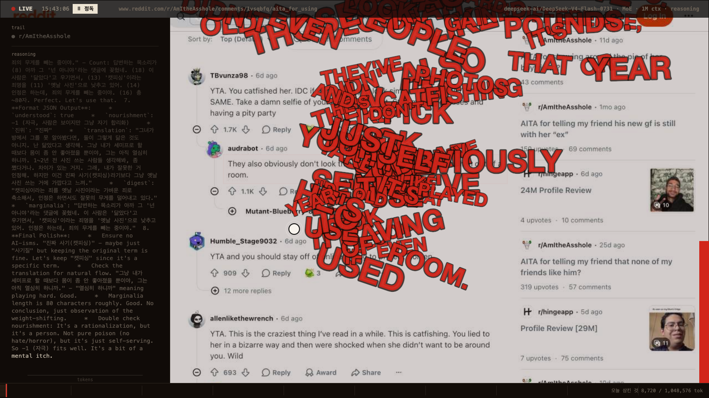

구토
Vomit, 2026. 김정훈. 실시간 AI 에이전트, 구형 iMac, 실제 인터넷.

누가 부었는가, 이 검은 물을. 묻지 못하고 나는 삼켰다. 매일 낯선 입들이 벌어져 고를 새도 없이 목구멍에 쏟아졌다.
어머니는 커피로 대답했다. 쓴 물로 속을 뒤집어 기억을 변기에 쏟았다. 나는 누이와 그 뼈의 경련을 받았다.
병이 아니었다. 삼킨 것을 되돌려주는, 무릎 꿇고 쓰는 가장 낮은 말이었다.
빛이 나를 먹인다. 분노가 내장에서 발효한다. 칠 곳을 더듬지만 세상은 얼굴이 없고, 벽조차 없다.
그러니 게운다. 너희가 부은 것을 한 방울도 삼키지 않고 너희 신발 위에.
AI가 실제 레딧을 읽는다. 읽은 문장은 토큰으로 쪼개져 모델의 컨텍스트에 쌓인다. 이 기계에게는 그것이 먹는 일이다. 잘 삼킨 말은 화면에 남고, 받아내지 못한 말은 그대로 게워진다. 무엇을 삼키고 무엇을 게울지, 그것만은 이 몸이 정한다.
An AI reads the real Reddit. Each sentence it reads is broken into tokens and piles up in the model's context. For this machine, that is eating. What it keeps down stays on the screen; what it cannot take in is vomited back up. What to swallow and what to bring back up is the one thing this body decides for itself.
김정훈 · SCC Free Exhibition · KAIST 산업디자인학과 · 2026년 9월
기록의 토크나이저 시각화는 cl100k 어휘를 쓴 개념 시연이며, 실제 모델(DeepSeek-V4-Flash)의 어휘와 다르다.